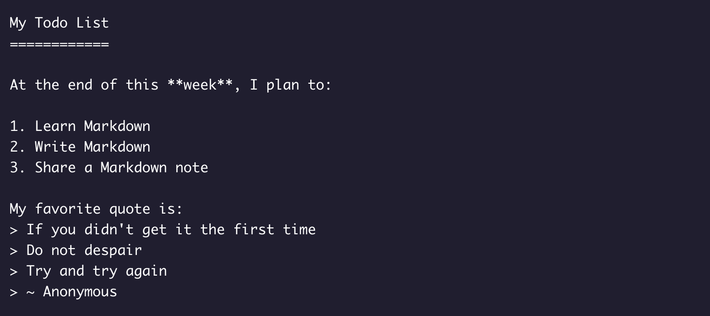
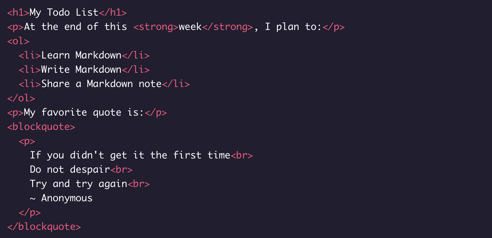
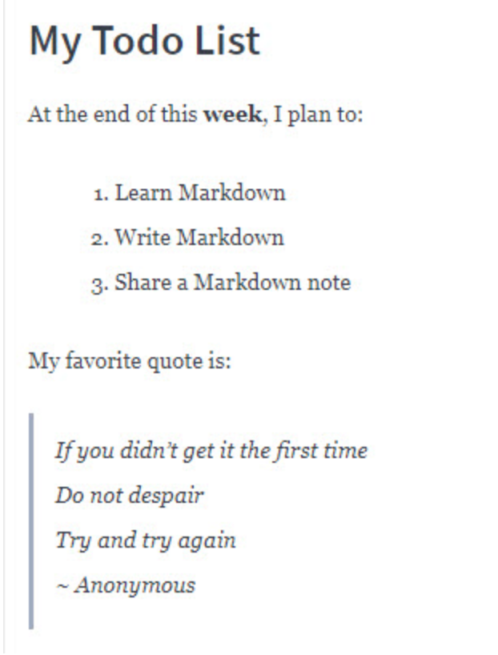

Introduction
If you are looking for a simple way to create visually appealing text documents without using any fancy editors, check out Markdown. Invented by John Gruber and Aaron Swartz in 2004, Markdown provides a lightweight syntax to style any text document so that it can be converted to HTML for viewing and publishing.
Differences between HTML and Markdown
Markdown translates to HTML, but Markdown is not a replacement for HTML. Markdown’s syntax can be converted to a small subset of HTML tags to do things like format text, add links, display images, and more. You can even incorporate HTML elements inside a Markdown document. To render Markdown in HTML, though, you would need a tool called a Markdown parser (more about this parser later on).
Benefits of Using Markdown
Why would you use Markdown? Compared to HTML, writing text in Markdown is much faster because the syntax is simpler. The authors of Markdown intended Markdown to be a language for writing styled text with syntax that is just as easy to read as it is to write.
Imagine that we are writing down some important text on a sheet of paper. If we wanted to emphasize the text we might underline it, twice even! Similarly, in Markdown, we could write:
Title of My Document ====================
Notice that we have plain text that has a row of equal signs (=) to produce a first-level header, also known as <h1>. On a webpage, the heading will display as such:
Title of My Document
The amount of =s don’t matter so long as there’s at least one and it goes under the text.
For text that’s important, but not as important as a first-level heading, we might just underline it once. In code, we could use a row of hyphens (-), like so:
Sub-Title of My Document ------------------------
to produce a second-level header, also known as <h2>:
Sub-Title of My Document
Both examples are valid Markdown syntax. It is intuitive and normal for headings to be in either format. Alternatively, you can format headings using the # character. We’ll show more examples of different headings, but for now, here’s an example of valid syntax for a <h1> heading:
# Title of My Document
Furthermore, a Markdown document without any HTML tags can be published as is because its syntax is already made for easy viewing. For example, the following Markdown document has:
- styled a heading underlined with equal signs (=),
- emphasized week in bold with double asterisks (**),
- bulleted a list by prefacing each item with a number and a period,
- and marked several lines as separate quotes with an angle bracket (>) per quote.

The HTML equivalent to the above would be:

When viewed on a Markdown parser such as Stackedit.io, you will see this:

or this, based on Codecademy’s parser:
My Todo List
At the end of this week, I plan to:
- Learn Markdown
- Write Markdown
- Share a Markdown note
My favorite quote is:
- If you didn’t get it the first time
- Do not despair
- Try and try again
- ~ Anonymous
While both parsers take the same Markdown input, they render slightly different HTML based on their internal configuration and CSS.
When to Use Markdown
After knowing the many benefits of Markdown, you might want to consider using Markdown if you ever find yourself in any of these scenarios:
- The only editor available to you supports just plain text.
- Time is of the essence and you can’t afford to learn how to use an unfamiliar rich-text editor.
- You need to quickly outline your ideas in a structured but presentable manner.
- You want your document to be portable so that it can convert to HTML, PDF, EPUB, and/or MOBI.
Markdown Document Extension
Contrary to popular belief, Markdown is not a document format. Therefore, it doesn’t require a strict file extension naming convention, such as .md. As the official Markdown mailing list
explains, Markdown isn’t meant to take over the format of a file. Any file extension that you would normally use to name your text document such as .txt or .text is appropriate. However, organizations such as GitHub have a preference to expect Markdown documents to appear with an .md or .markdown extension.
Markdown Applications
Since Markdown has gained a lot of popularity, you will find Markdown content being accepted in many applications.
- Website publishers that accept Markdown content include Wordpress.com, Ghost and BeakerBrowser. Tools such as Jekyll Docusaurus and MKdocs can convert Markdown documents into a static website geared for technical documentation. Take a look at this page rendered in HTML, and its text source styled in Markdown
- Book publishers such as LeanHub accepts Markdown manuscripts and convert them to books for publication.
- Slide-show presentations such as Remark and Cleaver can convert Markdown slides into HTML for web viewing.
The Markdown Parser
A Markdown parser is software written to parse the Markdown syntax in a text document and convert it to HTML syntax. The original Markdown parser was written in Perl, but you can find parser implementations today in almost any programming language. Regardless, a basic Markdown parser should support the core Markdown syntax: paragraphs, headers, blockquotes, phrase emphasis, lists, code, images, and links.
There are Markdown parsers that are freely available on the Web: StackEdit.io, Dillinger, Parse and Markdown to HTML Converter. In addition to parsing and rendering, both Parse and Markdown to HTML Converter also convert the Markdown document to raw HTML so that you can copy and paste the HTML to be used elsewhere.
Markdown Tutorial
Let’s learn a little more about the Markdown syntax. As mentioned above, you can simulate a <h1> HTML tag with a # Markdown symbol. Since there are six heading tags for HTML, from <h1> through <h6>, you can simulate this with # through ###### in Markdown. For example this Markdown syntax:
# This is a H1 heading
## This is a H2 heading
### This is a H3 heading
#### This is a H4 heading
##### This is a H5 heading
###### This is a H6 heading
will render this:
This is a H1 heading
This is a H2 heading
This is a H3 heading
This is a H4 heading
This is a H5 heading
This is a H6 heading
In addition to numbered lists, you can style a bulleted list too. There are three different symbols you can use to mark a line item as a bullet: asterisk (*), plus sign (+), or hyphen (-).
For example:
* Markdown
+ HTML
- XML
produces this:
For best practice, it is recommended to use the same marker throughout your list instead of mixing them like above.
The core Markdown syntax does not include nested lists (list within another list), but it allows adding paragraphs between list items. To do so, you need to add a blank line after a list item and indent 4 spaces or 1 tab before starting a paragraph. Some parsers are lenient and do not enforce 4 spaces but there should be some spacing.
In this resource, you will find a summary of all the basic Markdown syntax. This is helpful if you want a quick reference guide for writing in Markdown.
In this resource, you will learn about working with Markdown files in Visual Studio Code. This is helpful if you would like to get a closer look at some of the Markdown features and extensions in VS Code that can help increase your productivity.